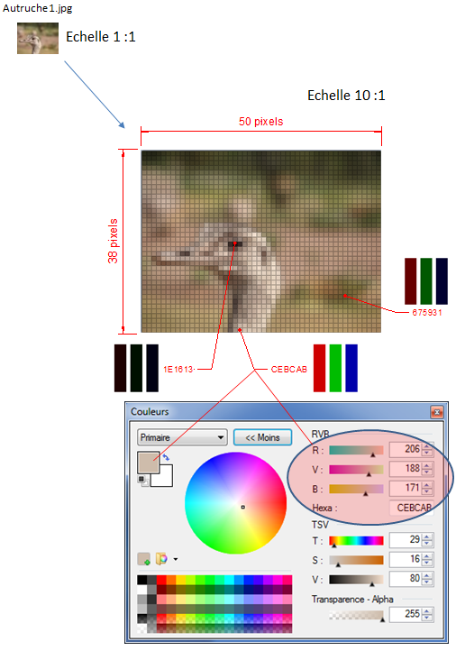
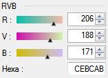
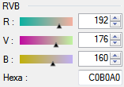
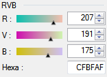
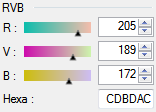
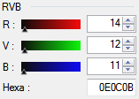
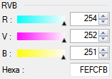
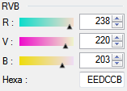
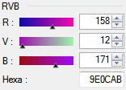

 |
Vous trouverez dans le dossier "Notices" quelques détails sur l'utilisation de "PaintDotNet". L'image "Autruche.bmp" ci-contre est représentée à l'échelle 1 telle qu'on la voit à l'écran. Son grossissement 10 fois montre qu'elle est constituée de 50 pixels horizontalement et 38 pixels verticalement soit un total de 1900 pixels. A chaque pixel affiché à l'écran correspond en fait trois sous pixels Rouge Vert et Bleu ayant chacun un niveau de luminosité. Enregistrer une image consiste donc tout simplement à enregistrer pour chaque pixel le niveau de luminosité de ses composantes RVB. Chacune des trois couleurs a une luminosité plus ou moins forte représentée par la valeur d'un octet. Cette valeur peut donc varier de : 0000 0000 à 1111 1111 en binaire ou 00 à FF en hexadécimal ou 0 à 255 en décimal. - Dans PaintDotNet faites un zoom à 2400% - A l'aide de l'outil "pipette" sélectionnez le pixel de coordonnées 20,37 Dans l'image de l'autruche ci-contre, le 21ème pixel de la ligne du bas à une couleur dont les composantes RVB ont respectivement pour niveau de luminosité:
Soit une couleur dont la valeur numérique est 16#CEBCAB ou 2#110011101011110010101011 ou 13548715 respectivement en Hexadécimal, en binaire et en décimal. Rappel: ====== Dans un nombre hexadécimal, chaque chiffre à un poids qui est une puissance de 16. Dans nombre CE le poids de C=161 , le poids de E=160 . CE(16) = (12 x 16) + (14 x 1) = 206(10) |
Dans chaque octet correspondant à l'intensité du R,V ou B le chiffre de poids fort (celui de gauche) à 16 fois plus de poids que le chiffre de poids faible (celui de droite).
Chaque chiffre de l'octet peut varier de 0 à F.
Que se passe-t-il si l'on change la valeur du chiffre de poids faible ou de poids fort d'une composante RVB ? Essayons pour voir !
- Sélectionnez à nouveau le pixel de coordonnées 20,37
Sa couleur RVB en hexa est CEBCAB (fig 1)
- Modifiez chaque chiffre de poids faible de chaque octet
Ex: C0B0A0 ou CFBFAF ou CDBDAC
On s’aperçoit que la variation de couleur dans ce cas est très faible
|
|||
 |
 |
 |
 |
- Modifiez maintenant chaque chiffre de poids fort de chaque octet
Ex: 0E0C0B ou FEFCFB ou EEDCCB ou 9E0CAB
On s’aperçoit que la variation de couleur dans ce cas est beaucoup plus importante
|
|
||
 |
 |
 |
 |
En effet:
Si on passe de CE à CF (206 à 207) en changeant le chiffre de poids faible d'une unité, la valeur globale est modifiée de une unité.
Si on passe de CE à DE (206 à 222) en changeant le chiffre de poids fort d'une unité, la valeur globale est modifiée de 16 unités.
CE(16) = 206(10) CF(16) = 207(10) DE(16) = 222(10)